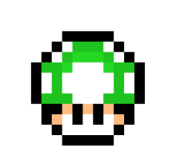
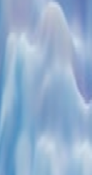
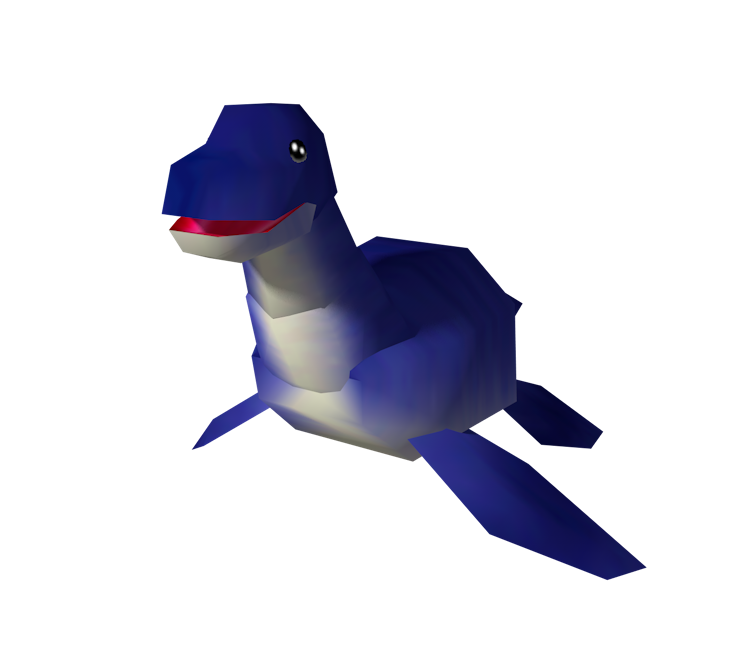
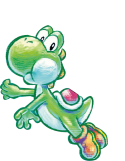
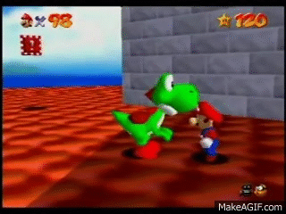
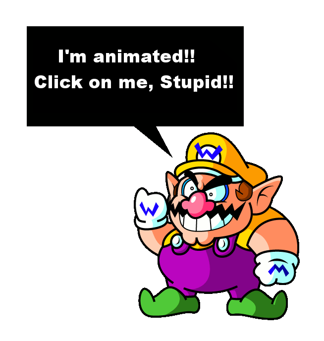
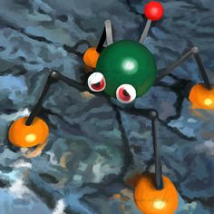
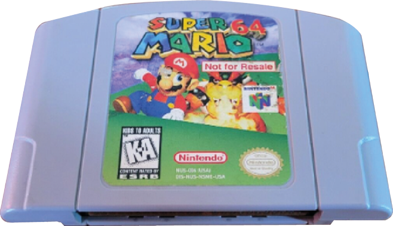
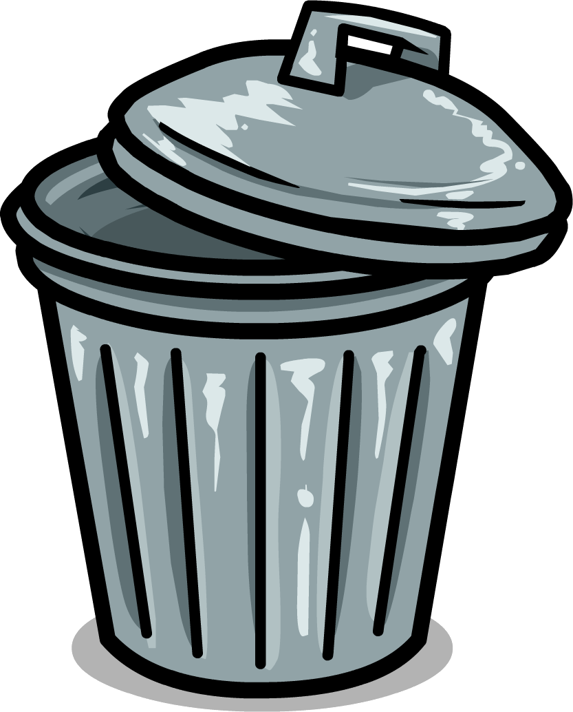
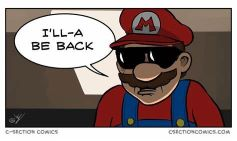

Heureusement qu’ils ont changés les sons de la béta...

Dans le premier niveau de Super Mario 64 un 1up se révèle derrière un mur semblant parfaitement normal. Et si d’autres étaient cachés à travers le jeu ? Et si d’autres champignons étaient coincés entre les murs ?

L IS REAL 2401
Sur la stèle du jardin de Peach, une écriture floue a été déchiffrée par les joueurs «L is real 2401». L’éventualité de l’apparition de Luigi dans le jeu a alors fait fantasmer toute la communauté sans pour autant donner suite. C'est 24 ans et 1 mois après que le plus gros leak de Nintendo se produit, révélant ainsi le Sprite de Luigi dans les codes de Super Mario 64.
Après avoir vaincu le roi Bo-Bomb au sommet du premier niveau, si vous y retournez, au pied de la montagne dans un creux ou auparavant deux boules noirs s’entrechoquaient, une troisième est apparu. Les barreaux déjà présents prennent alors leur sens. C’est une prison ou roule sans cesse le roi déchu à présent.
Certains streamers ont pu l’enregistrer, ce rire extrêmement rare a effrayé un grand nombre d’habitués du manoir des boos.

Le gameplay nous montre le meilleur de cette créature et pourtant un unique panneau laisse entrevoir la noirceur de son âme."Don't become his lunch". Une ligne de dialogue supprimé dans la version francaise du jeu.
Sur le toit du château on peut rencontrer un yoshi. Il parle et sa carapace est différente du yoshi que l’on connait tous, dépourvu de langage. A la fin de son dialogue il saute du toit et on ne le revoit plus. Beaucoup pense qu’il se serait suicidé à ce moment-là.
 
Plus le joueur remporte d’étoiles plus les Toads réapparaissent dans le château, sur la façade de l’entrée le vitrail n’est pas le même que lorsqu’on regarde au même endroit à l’intérieur du château : les couleurs et la posture change. L’épaisseur du mur à cette endroit parait démesurer également. On peut en conclure que les Toad sont prisonniers des murs et que la princesse se trouve quand à elle emprisonnée derrière le vitrail la représentant.

Dans la béta une course poursuite devait avoir lieu : Mario fuyant une tête immense de Wario. La scène jugée surement non-adapté au public cible de la franchise, seul un reste de cet événement est présent dans la version finale, apparaissant aléatoirement et terrorisant mon âme d’enfant encore aujourd’hui (j’en ai fait des cauchemars à l’époque).

De nombreux joueurs ont fait l’expérience de cauchemars identiques sur Super Mario 64 le plus souvent liés au monde trempé-séché ou à Wario, c’est avec l’arrivée d’internet que les joueurs ont pu s'en appercevoir.


Nintendo comme toutes les entreprises de jeux vidéo envoyaient des copies invendables du jeu pour que les vendeurs puissent le faire tester dans leur boutique. Pourtant la version de test était strictement identique alors pourquoi la rendre invendable et poursuivre en justice des gens pour si peu. Dans le même registre Nintendo met un point donneur à poursuivre quoiqu’onques trifouillent son jeu pour dénicher ses secrets. On rapporte qu’encore de nombreux mystères sont présent dans le code et sont à découvrir mais la réalité est que certains posent souvent plus de problèmes que d’autres et devraient surement restés cachés pour le bien de la franchise.
